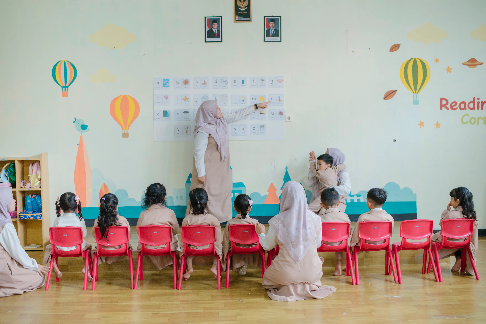
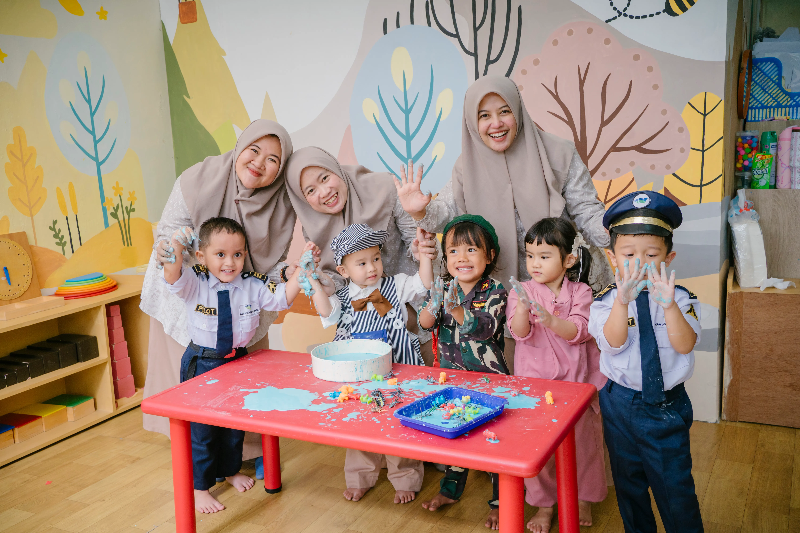
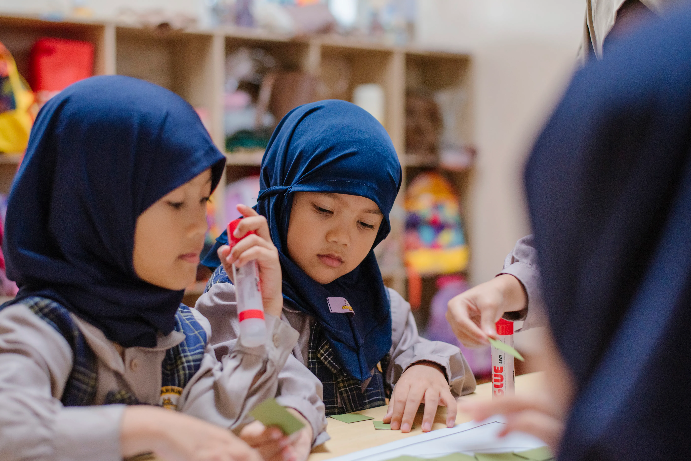
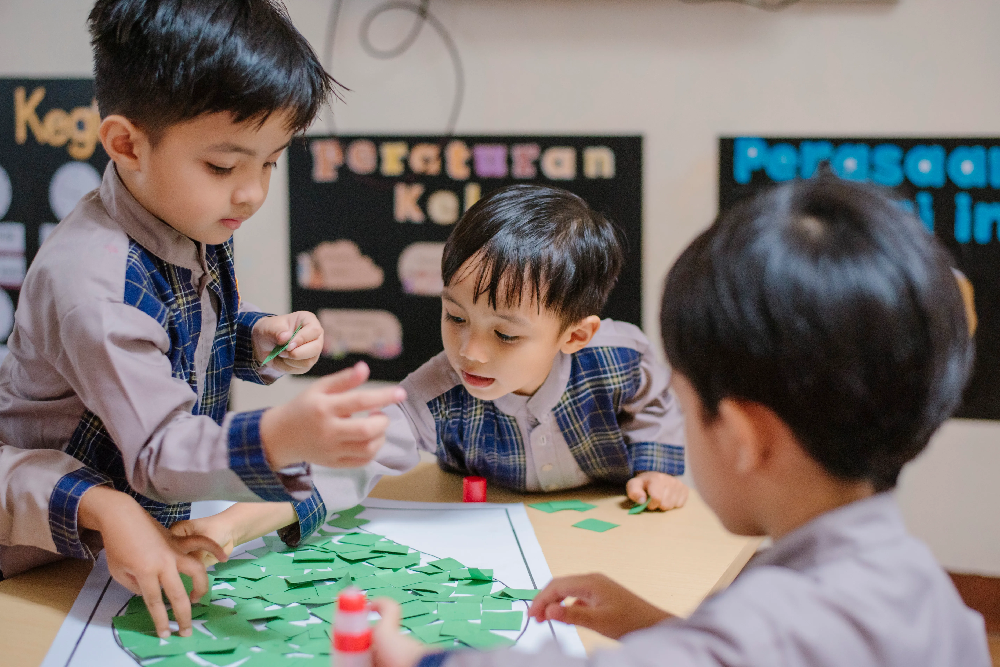
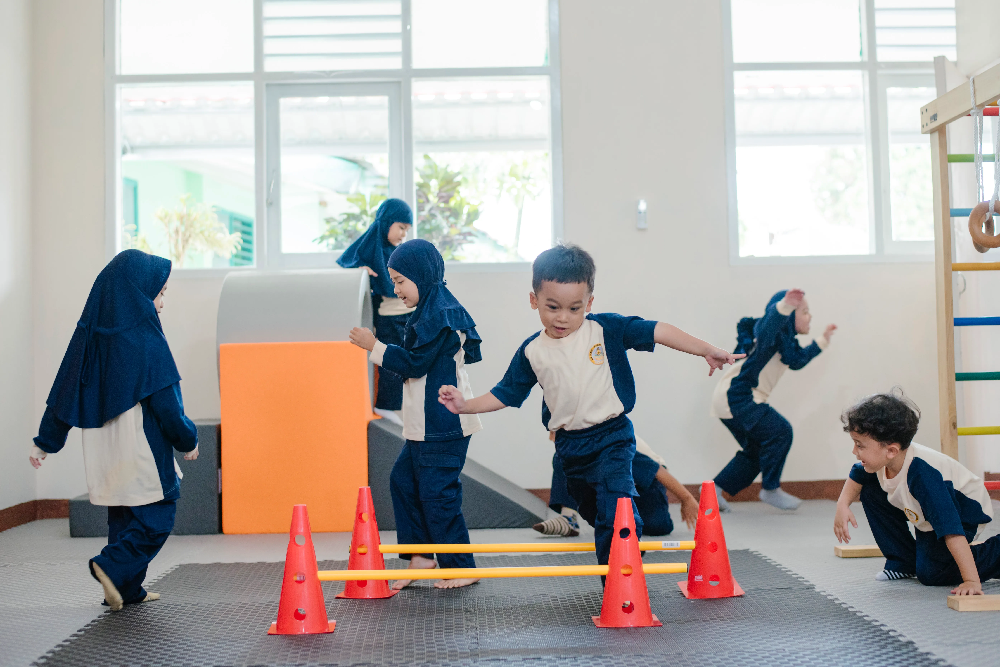

Apa yang Anak Lakukan?
Beragam kegiatan menyenangkan yang mendukung tumbuh kembang anak secara holistik

Kegiatan Islami
Hafalan surat pendek, doa harian, hadits pilihan, dan praktik ibadah dasar yang ditanamkan sejak dini dengan cara yang menyenangkan.

Seni & Kreasi
Mewarnai, melukis, kolase, playdough, dan berbagai kerajinan tangan yang merangsang kreativitas dan motorik halus anak.

Science & Eksplorasi
Eksperimen sederhana, mengenal alam, berkebun, dan observasi lingkungan sekitar untuk membangun rasa ingin tahu anak.

Bahasa & Literasi
Dongeng, bernyanyi, bermain kata, serta pengenalan bahasa Arab dan Inggris melalui aktivitas yang interaktif dan menyenangkan.

Olahraga & Gerak
Senam pagi, permainan outdoor, dan aktivitas fisik yang menyenangkan untuk menjaga kesehatan dan mengembangkan motorik kasar.

Sosial & Emosional
Belajar berbagi, bekerja sama, dan mengelola emosi melalui permainan kelompok dan aktivitas kolaboratif yang terstruktur.